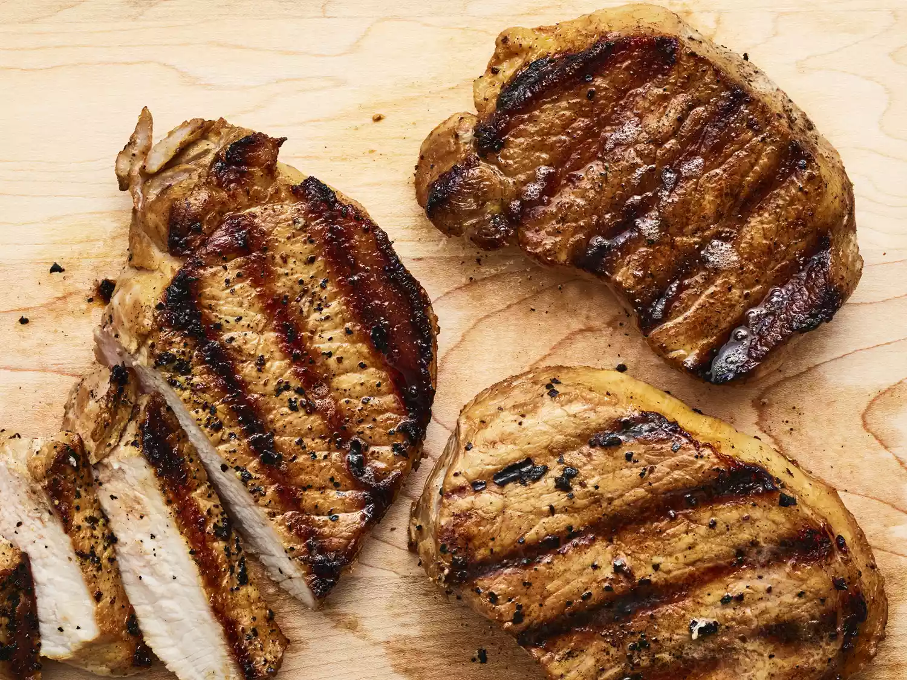

Grilled Pork Chops

Description
This is my Grilled Pork Chops recipe. I originally learned how to grill at a steakhouse while
attending Alabama State University. This recipe is pretty simple to follow and fairly easy to cook. The key to
cooking any white-meat on a grill is marination. Once you get that down the rest is getting your grill temp
right and checking your meat.
Ingredients:
- Four 6-8oz. Pork Loins (Preferably rib cut)
- 2 cups of water
- 1/2cup of Dales Seasoning
- 1/4cup of Worcestershire Sauce
- 1/4cup of Honey Mustard
- Salt and Pepper
- Garlic Powder
Steps
- Mix the water, Dales, Worcestershire Sauce, Honey Mustard in a large mixing bowl
- Season the Pork Loins with the salt, pepper, and garlic powder; I recommend rubbing them into the meat
- Place the loins into a large zip-lock bag and pour your marinade on them. Allow at least 1 hour to marinate
- Heat your grill to 400 degrees Fahrenheit 10 minutes before removing chops from marinade
- Once the pork chops are ready, remove them from the marinade and grill them for about 5 minutes per side.
The internal temperature should be 145 degrees fahrenheit
- Remove the grilled pork chops and let them rest on a plate for 3-5 minutes before serving
- Discard used marinade